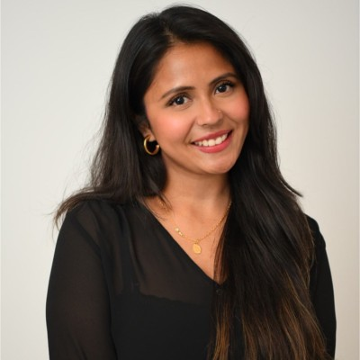

|
Lab Members
Principal Investigator
Graduate Students
|
|
Tianyu Han
Ph.D. Student
Tianyu Han received the B.S. degree in Mechanical Engineering from Michigan State University in 2020 and the M.S. degree in Mechanical Engineering from Washington University in St. Louis in 2021. He is currently a Ph.D. student in Mechanical Engineering at CCNY, working on nonlinear and safety-critical control of underactuated systems.
Email: tianyu.han37@stu-mail.ccny.cuny.edu
|
|
 |
Salsabil Salah
Ph.D. Student, Co-Advisor: Yiqiao Li
Salsabil Salah received the B.S. degree in Electrical Engineering from Purdue University and the M.S. degree in Business Analytics from Duke University. She is a Ph.D. student in Civil Engineering at CCNY, with prior experience in clean transportation research and current interests in intelligent and sustainable mobility systems.
Email: salsabil.salah54@stu-mail.ccny.cuny.edu
|
Theses and Dissertations Supervised
Master's Theses
Junquan Wu, “Reinforcement Learning Control for Mobile Robot Parking with Safety Constraints,” Master's Thesis, The City College of New York, December 2025. [pdf]
Ishvar Sitaldin, “Deep Reinforcement Learning for Leader-Follower Mobile Robot Navigation with LSTM-Based Obstacle Encoding,” Master's Thesis, The City College of New York, May 2026. [pdf]
Yubai Liang, “Baseline-Assisted Adaptive Dynamic Programming Control for Mobile Robots and Surface Vessels,” Master's Thesis, The City College of New York, May 2026. [pdf]
Former Lab Members
| Semester | Name | Academic Level |
|
2026 Spring | Yubai Liang | Master's Student |
|
2025 Fall | Junquan Wu | Master's Student |
|
2025 Spring | Michael Wang | Undergraduate Student |
|
| Adrian Garcia | Undergraduate Student |
|
| Fraylin Sanchez | Undergraduate Student |
|
| Daniel Santiago | Undergraduate Student |
|
| Matthew King | Undergraduate Student |
|
2024 Fall | Mohammed Bah | Undergraduate Student |
|
| Renato Fernandez | Undergraduate Student |
|
| Varin Sawh | Undergraduate Student |
|
| Hannah Lilly | Undergraduate Student |
|
| Carlos Stalin Calle | Undergraduate Student |
|
| Christopher Colón Espinal | Undergraduate Student |
|
| Ryan Fong | Undergraduate Student |
|
| Leonidas Kalpaxis | Undergraduate Student |
|
2024 Summer | Amit Sarker | Visiting Student
|
|